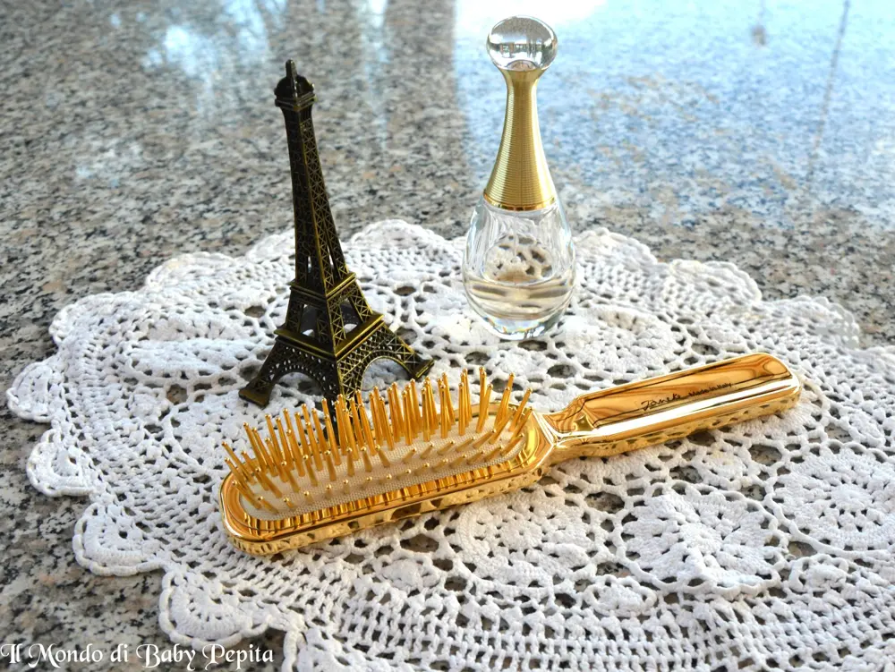
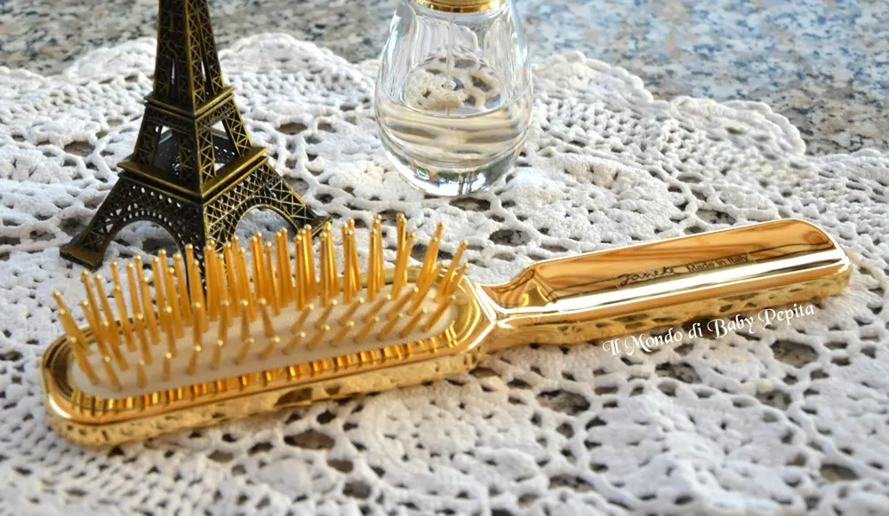
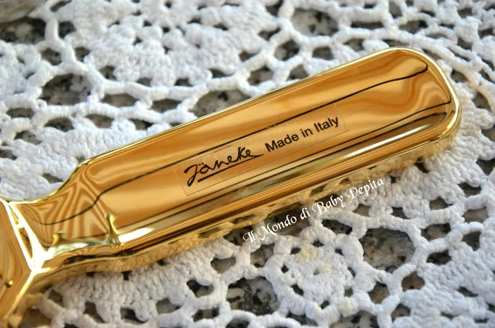
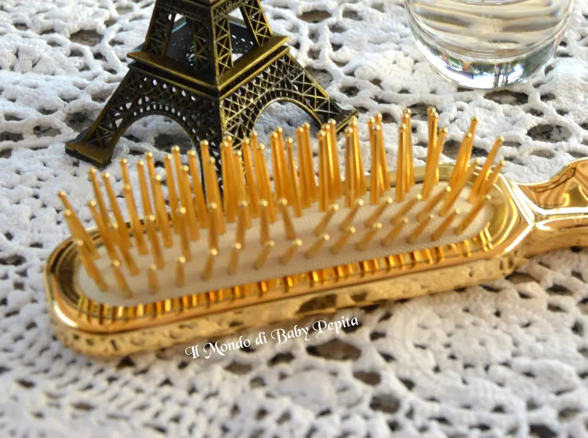

Janeke - la spazzola dalle mille coccole


Ancora un volta sono qui a parlarvi di Janeke
Chi mi segue sta scoprendo insieme a me che questo marchio è davvero di ottima qualità. . (per chi se li fosse persi gli altri due articoli ve li riporto QUI e QUI).Oggi sono qui per mostrarvi un altro accessorio che è indispensabile per il nostro beauty case, ovvero una spazzola . .

La spazzola in questione è una spazzola dorata rettangolare bella anche da guardare, ma con la particolarità che ha le punte morbide. .

La parte del manico è ovviamente firmata dall'azienda ed essendo cromata e quindi lucida è bella anche da usare come uno specchietto dell'ultimo momento :D
Ci garantisce subito un liscio perfetto e sui capelli bagnati oppure umidi, scivola senza creare nodi districandoli con facilità. .Insomma delle vere coccole alla testa . .
 Prezzo 36,00 €
Prezzo 36,00 €
Vi consiglio di visitare la loro pagina facebook: https://www.facebook.com/janeke1830/?fref=tsE il loro sito dove potete vedere e informarvi su tutte le spazzole e non solo: http://janeke.it/
In quanto a me se volete potete seguirmi su :FACBOOKINSTAGRAMTWITTERYOUTUBESNAPCHAT